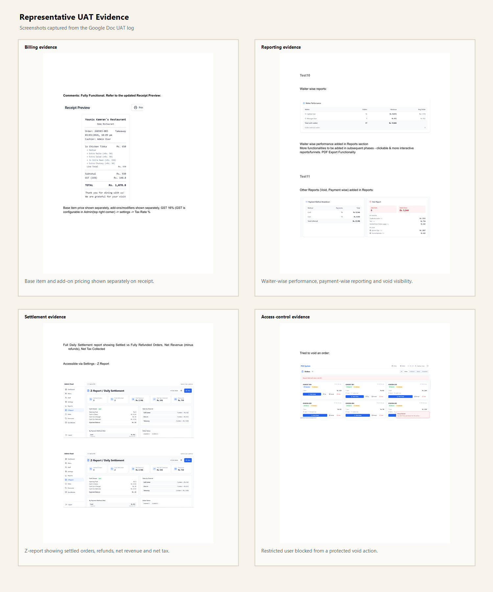

|
Requirements
20
Tracked from POS.docx
|
Integrated
20
Covered in product flow and UAT evidence
|
UAT Cycles
4
Core execution plus live revalidation
|
Live Status
Ready
Validated against deployed workflow
|
The testing sequence moved from billing accuracy into service operations, then into exception handling, reporting, and final live refinement. Repeated scenarios were collapsed wherever a later test validated the same requirement more completely.
|
Cycle 1
Billing integrity
Receipts, taxes, split tenders, dual totals and discounts validated.
|
Cycle 2
Service operations
Table sessions, waiters, customers, pay-first flow and admin reporting validated.
|
Cycle 3
Control layer
Void authorization, refunds, restricted-user access and Z-report flow validated.
|
Cycle 4
Live refinement
March 7-8, 2026 updates tightened permissions, refund UX and settlement semantics.
|
| # | Requirement | How it is integrated | UAT trail | Status |
|---|---|---|---|---|
| 1 | Separate rates for items and extras on receipt Receipts show base item price apart from add-ons. | Receipt and order breakdown preserve the base item and each modifier as distinct billable lines. | Test 1Receipt screenshots | Integrated |
| 2 | Payment-mode tax percentages apply by cash and card Tax treatment changes by tender type. | Billing and settlement views calculate tender-sensitive totals so the operator sees the correct amount before closure. | Test 3Test 5Test 13 | Integrated |
| 3 | Corrected tax rates of 16% cash and 5% card Revised rates must flow into order and reporting outputs. | The configured rate structure is carried from payment through receipt and then into management summaries. | Test 3Settlement screenshots | Integrated |
| 4 | Partial cash and card payment reflected clearly Split tender remains visible rather than being collapsed. | The payment flow stores split settlement transparently and prints the individual cash and card amounts back on the bill. | Test 3Bill screenshots | Integrated |
| 5 | Bill shows both cash and card options before payment The operator sees both settlement outcomes up front. | The payment view exposes dual totals by tender, allowing commercial comparison before a method is selected. | Test 5Payment screenshots | Integrated |
| 6 | Different discount types available Discounting remains configurable and controlled. | Discount controls are applied during billing and reflected into downstream totals while staying role-aware. | Test 5Test 15Live cashier retest | Integrated |
| # | Requirement | How it is integrated | UAT trail | Status |
|---|---|---|---|---|
| 7 | Pay-after-eat dine-in with consolidated table bill Multiple orders accumulate into a single table settlement. | Dine-in orders attach to an open table session so multiple sends can close on one final bill. | Test 4Table session screenshots | Integrated |
| 8 | Support both pay-after-eat and pay-before-eat models Commercial mode is configurable. | Admin settings switch the order flow between normal settlement and pay-first enforcement. | Test 4Test 9March 8 live revalidation | Integrated |
| 9 | Order screen shows table number Table-linked orders remain identifiable during service. | The active order and admin order card retain the table label for operational clarity. | Test 2Order screen screenshots | Integrated |
| 10 | Waiter or server assignment option Service staff can be linked at order level. | Orders support waiter assignment so accountability and reporting can be tied back to the serving staff member. | Test 7Receipt and order screenshots | Integrated |
| 11 | Waiter-wise report Reporting shows order count and value by waiter. | Admin reporting includes waiter performance visibility for management review of service output. | Test 10Reports screenshotsLive reporting validation | Integrated |
| 12 | Customer profile with walk-in default Orders may attach to a known customer or remain walk-in. | Order and call-center flows support lookup, creation, history and default walk-in handling. | Test 8Call center flowLive sync retest | Integrated |
| # | Requirement | How it is integrated | UAT trail | Status |
|---|---|---|---|---|
| 13 | Void transactions appear separately in reports with reason Void events remain auditable and visible in reporting. | Void handling records the event and its reason, then surfaces it separately from normal sales totals. | Test 6Test 11Void reason screenshots | Integrated |
| 14 | Void requires comment and password authorization Voiding cannot remain a casual cashier action. | The void path requires comment capture and elevated authorization before execution. | Test 6Access retestLive permission hardening | Integrated |
| 15 | Refund option with complete tracking in pay-before-eat flow Refunds are available and fully traceable. | Paid orders expose refund handling in the payment flow with refunded amount and transaction history preserved as a distinct audit event. | Test 14Live refund deploymentRefund screenshots | Integrated |
| 16 | Proper shift closing report with cash reconciliation Drawer math and settlement closeout are visible in one flow. | The Z-report behaves as a settlement surface, reconciling cash in, change, refunds and expected balance. | Test 13Live settlement retestRefund-adjusted closeout | Integrated |
| 17 | User access controls for discount, void and refund Sensitive actions respect role boundaries in UI and execution. | Role-based controls govern discount, void and refund access with restricted-user validation confirming blocked actions. | Test 15Cashier retestLive role sync | Integrated |
| # | Requirement | How it is integrated | UAT trail | Status |
|---|---|---|---|---|
| 18 | Payment-mode-wise daily sales report Management sees daily sales by tender type. | Daily reporting presents tender-level visibility with settlement-aware values for cash and card. | Test 11Test 13Live net-settlement validation | Integrated |
| 19 | Item-wise and category-wise sales reports Management can analyze performance by mix and category. | The reporting layer includes item-level and category-level performance visibility beyond aggregate daily revenue. | Test 13Reporting screenshots | Integrated |
| 20 | Full daily sale summary with cash, credit, tax and net sale Daily control view remains commercially coherent. | Admin summary and settlement reporting now present a coherent daily view across tender, tax, discounts, refunds and net sale. | Test 13Test 21Live summary refinement | Integrated |
